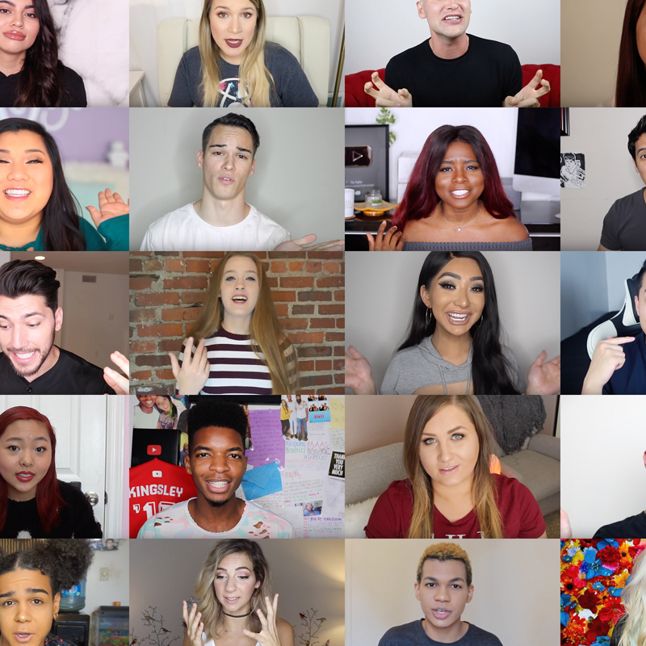
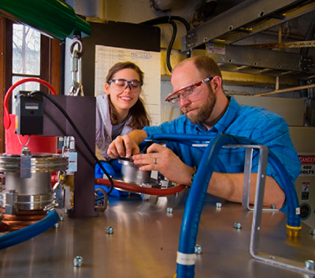

Current Projects
Automatic Multimodal Affect Detection for Research and Clinical Use
Sponsored by : National Institute of Mental Health (NIMH)
Collaborators : University of Pittsburgh, University of Oregon, and Oregon Research Institute
Year : 2017 - 2024
The goal of this project is to extend current capabilities in automated multimodal measurement of affective behavior (visual, acoustic, and verbal) to develop and validate an automated system for detecting the constructs of Positive, Aggressive, and Dysphoric behavior and component lower-level affective behaviors and verbal content. For behavioral science, this automated coding of affective behavior from multimodal (visual, acoustic, and verbal) input will provide researchers with powerful tools to examine basic questions in emotion, psychopathology, and interpersonal processes. For clinical use, automated measurement will help clinicians to assess vulnerability and protective factors and response to treatment for a wide range of disorders.
Past Projects
Multimodal Learning for Social Understanding
Sponsored by: Bayernische Motoren Werke AG
Year :2019-2022
The goal of this project is to take advantage of our expertise in multimodal machine learning and social intelligence understanding to build new prediction models and extend our Social-IQ dataset.
Visual Grounding for Robot Dialogue in 3D Environments
Sponsored by: Siemens Corp
Year :2019 - 2020
Artificial intelligence has enabled the creation of digital personal assistants that communicate verbally with users to help them complete daily tasks such as scheduling, shopping, and managing playlists. The goal of this project is to design systems that can comprehend visually grounded language in on-going dialogues within interactive environments.
Towards Automated Multimodal Behavioral Screening for Depression
Sponsored by: Pittsburgh Data Health Alliance
Collaborators: UPMC
Year :2018 - 2023
Depression is a leading cause of disability worldwide. Effective, evidence-based treatments for depression exist but many individuals suffering from depression go undetected and therefore untreated. Efforts to increase the accuracy, efficiency, and adoption of depression screening thus have the potential to minimize human suffering and even save lives. Recent advances in computer sensing technologies provide exciting new opportunities to improve depression screening, especially in terms of their objectivity, scalability, and accessibility. Professor Morency and Dr. Szigethy are collaborating to develop sensing technologies to automatically measure subtle changes in individuals’ behavior that are related to affective, cognitive, and psychosocial functioning. Their goal is to develop and refine computational tools that automatically measure depression-related behavioral biomarkers and to evaluate the clinical utility of these measurements.
Trimodal Sentiment and Emotion Intensity Estimation
Sponsored by: Samsung
Year :2018 - 2019
The goal of this project is develop new multimodal representations and fusion algorithms to integrate information from three modalities (language, visual and acoustic) when recognizing sentiment and emotion intensities.
MAPS: Mobile Assessment for the Prediction of Suicide
Sponsored by: NIH
Year :2018 - 2022
The goal of this project is to use smartphone technology to collect intensive longitudinal data amongst high risk adolescents in order to predict short term risk for suicidal thoughts and behaviors (STBs). This project will use automated techniques to process these data, especially automated analyses of facial expression, acoustic voice quality and natural language processing.
Robust Predictors of Mania and Psychosis
Sponsored by: NIH
Year :2018 - 2022
The goal of this project is to identify biological, environmental, and social factors that trigger dangerous mental states, particularly mania and psychosis, in individuals known to be at risk for these conditions using intensive, longitudinal, assessments.
Towards natural dialogue with robots in a collaborative exploration task
Sponsored by: Army Research Lab (ARL)
Collaborators: University of Southern California
Year :2014-2019
The goal of this project is the assessment of multimodal social grounding in dialogue with robots. Specifically, we will analyze the protocols used for grounding in the experimental data, including how images, maps, and robot actions are used to indicate the commander’s understanding.

Learning Nonverbal Signatures
Sponsored by: National Science Foundation
Year :2018 - 2022
The goal of this project promotes a novel paradigm for learning visual representations of human nonverbal behaviors: a major focus on intra-personal variability followed by analysis of group structures and eventual learning of visual representations generalizable across the population.
Decoding and Reconstructing the Neural Basis of Real World Social Perception
Sponsored by: National Science Foundation (NSF)
Collaborators: University of Pittsburgh
Year :2017 - 2020
The goal of this project is to develop the first fully ecologically validated models of visual perception. We will combine intracranial EEG (iEEG) recordings captured during long stretches of natural visual behavior with cutting-edge computer vision, machine learning, and statistical analyses to understand the neural basis of natural, real-world visual perception. To accomplish this goal, the researchers will record electrical brain activity from patients undergoing neurosurgical treatment for epilepsy. This will allow us to decode the spatiotemporal patterns of neural activity and reconstruct the expressive features of people they see at these different levels on a moment-to-moment basis.
Dyadic Behavior Informatics for Psychotherapy Process and Outcome
Sponsored by: National Science Foundation (NSF)
Collaborators: University of Southern California and University of Pittsburgh
Year :2017 - 2023
The goal of this project is to develop computational representations that can model fine-grained dyadic coordination between clients and therapists and new algorithms that can model multi-level dynamics within and between sessions. We introduce a new computational framework, named Dyadic Behavior Informatics, specifically designed to develop and evaluate nonverbal behavioral indicators that predict process and outcome measures of psychotherapy. The unique aspect of our proposed work, motivated by the recent findings on working alliance, is the explicit modeling of both therapist and client behaviors during their dyadic interactions. This research will pave the way to a better understanding of the dyadic behavior dynamics in psychotherapy, build the computational foundations to predict process and outcomes, and more broadly inform behavioral science.
Modeling Nonverbal Dynamics
Sponsored by: Oculus/Facebook
Year :2016 - 2019
Nonverbal communication is an essential component of our daily life. A quick eyebrow frown from a student will inform the teacher of possible confusion. A tilt of the head may show doubt during negotiation.The goal of this project is to study how to computationally represent the temporal dynamics of nonverbal behaviors. Our approach is to include prior knowledge about nonverbal communication, both specific to the domain (e.g., nonverbal behaviors related to psychosis disorders) and also generic based on the large prior literature on discourse and conversational analysis. This research will allow for reliable measurement of similarity and variability between nonverbal behaviors.
Multimodal Emotion Recognition
Sponsored by: Samsung
Year : 2017 - 2018
Human communication is modulated by many affective phenomena including emotions, moods, interpersonal stances, sentiment, and personality. The goal of this project is to is to develop algorithms and computational representations able to automatically recognize human emotional states from speech and visual behaviors. This project focuses on acoustic and visual behaviors, including facial appearance and expressions, eye gaze, head gestures, prosodic cues and voice quality. We will develop recognition models able to predict emotions over time (from audio-visual sequences) and study approaches to reduce the effect of person-specific expressions (e.g., idiosyncrasy).
Partners in Learning: Building Rapport with a Virtual Peer Tutor
Sponsored by: National Science Foundation
Year :2015 - 2018
The goal of this proposal is to advance understanding of the role of the social in learning in technology-rich environments. Technological innovation plays a key role in this endeavor, both as a multimodal analysis tool to carry out richer analyses of rapport and learning than otherwise possible, and as a Rapport-Aligned Peer Tutor that instantiates the outcome of our explorations. The RAPT is a virtual peer tutors who can “sigh” in frustrated solidarity about the math task at hand, assess the state of a relationship with a student and know how to respond to maximize learning in the peer tutoring context.

Investigating an Interactive Computational Framework for Nonverbal Interpersonal Skills Training
Sponsored by: National Science Foundation
Collaborators: University of Southern California
Year :2014 - 2018
Interpersonal skills such as public speaking are essential assets for a large variety of professions and in everyday life. The ability to communicate in social environments often greatly influences a person’s career development, can help build relationships and resolve conflict, or even gain the upper hand in negotiations. The goal of this project is to create the computational foundations to automatically assesses interpersonal skill expertise and help people improve their skills using an interactive virtual human framework. This will be achieved by developing and evaluating a multimodal virtual human based computational framework specifically targeted to improve public speaking performance through repeated training interactions with a virtual audience that perceives the speaker and produces nonverbal feedback.
Developing Curiosity in the Science Classroom through Technology-Supported Role-Taking
Sponsored by: The Heinz Endowment
Year :2015 - 2018
This project will use role-taking in a low-risk, high-tech game context to foster curiosity, exploration and self-efficacy as a way to improve science education for elementary school students. Rather than trying to make students into science “learned,” we want them to become independent, self-motivated science learners. We will evaluate not whether they have learned science facts, but whether they are more likely to engage in scientific processes, whether their self-efficacy toward science learning changes, and whether they are willing to take risks to explore a subject and talk about what they have discovered.
Multi-modal distraction detection
Sponsored by: Department of Transportation
Year :2016 - 2018
There is documented evidence, such as the recently published AAA-funded study, that use of cellphones distracts drivers and causes accidents. We have been working on a solution that lets the drivers use their phones until they become distracted, automatically predicting these moments. The main goal of this project is to design a data collection effort that includes high cognitive load and the use of the subject’s own smartphone. This data collection will help to improve automatic algorithms for distraction detection.
Modeling Human Communication Dynamics
Sponsored by: National Science Foundation
Year :2011 - 2016
Face-to-face communication is a highly dynamic process where participants mutually exchange and interpret linguistic and gestural signals. The goal of this project is to create a new generation of computational models to learn the interdependence between linguistic symbols and nonverbal signals during social interactions. Our computational framework will pave the way for new robust and efficient computational perception algorithms able to recognize high-level communicative behaviors (e.g., intent and sentiments) and will enable new computational tools for researchers in behavioral sciences.
GLAIVE: Graphics-based Learning Approach Integrated with Vision Elements
Sponsored by: Intelligence Advanced Research Projects Activity
Collaborators: University of Southern California
Year :2014-2017
The GLAIVE project is part of IARPA Janus program which focuses on improving the current performance of face recognition tools by fusing the rich spatial, temporal, and contextual information available from the multiple views captured by today’s “media in the wild”. As part of the GLAIVE project, our goal is to build new technologies for automatic facial landmark detection. This project builds upon our existing expertise with neural networks and conditional discriminative models including the Constrained Local Neural Field model.
Computational Study of Nonverbal Social Communication
Sponsored by: National Science Foundation (NSF)
Year :2009-2014
The goal of this project is to develop computational models for predicting human nonverbal behavior during specific social contexts, such as the verbal and nonverbal behaviors immediately preceding a conversational turn. The ability to collect, analyze and ultimately predict human nonverbal cues can provide new insights into human social processes and new human-centric applications that can understand and respond to this natural human communicative channel. They have broad applicability for synthesis of natural animations, multicultural training and the diagnoses of social disorders.
InMind
Sponsored by: Yahoo!
Year :2015 - 2016 and 2019
The goal of Project InMind is to create a new kind of research project – one that draws on CMU’s best and most relevant research, integrating and amplifying these disparate research efforts to invent a next-generation intelligent, never-ending learning assistant for mobile devices. As part of the InMind Project, our goal is to build a software component to automatically analyze nonverbal behaviors of the user including both visual and vocal cues such as facial expression, eye gaze and voice quality.
Towards Natural Dialogue With Robots in a Collaborative Exploration Task
Sponsored by: Army Research Office
Collaborators: University of Southern California, Institute for Creative Technology
Year :2015 - 2017
Robots that are able to move into areas where people cannot and that are able to collaboratively explore these environments by teaming with remote humans, have tremendous potential to make a difference in a number of tasks, such as search and rescue operations, reconnaissance, or mission planning. The goal of this project is to better understand the verbal and nonverbal components involved in multimodal dialogue interaction during collaborative exploration tasks.